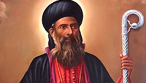

St. Gregorios Of Parumala – Metropolitan Geevarghese Mar Gregorios

Saint Gregorios of Parumala is popularly known as 'Parumala Thirumeni'. Metropolitan Geevarghese Mar Gregorios of the Malankara Orthodox Church who passed away on November 2nd 1902, became the first declared saint from Malankara (Kerala, India) naturally to be called, 'Parumala Thirumeni'. He shines in the cloud of witnesses as a bright luminary giving rays of hope to millions in their suffering and struggles.
Birth and Parentage
Mar Gregorios was born on 15th June 1848 (M.E. Mithunam 3, 1023) to Kochu Mathai and Mariam of Pallathetta family in the Chathuruthy house at Mulamthuruthy. He was called by the name 'Kochaippora' and was given the baptismal name 'Geevarghese'. Kochaippora had two brothers and two sisters; Kurian, Eli, Mariam and Varkey. Kochaippora was the youngest and was therefore the most beloved to everyone. Unfortunately, his mother passed away when he was only two years old. His eldest sister Mariam became to him all that a mother was meant. Mariam was married at that time and had a child of Kochaippora's age.
Reader-Deacon and Further Education
He was ordained as a reader-deacon (Korooyo) on 14th Sept, 1858 at the age of ten by Palakkunnath Mathews Mar Athanasios at Karingachira Church. Koroyo Geevarghese continued his training under Geevarghese Malpan until the latter died due to small pox. Although Deacon Geevarghese was also infected with small pox, he miraculously survived it. Afterwards Deacon Geevarghese moved to Pampakuda to continued his studies under Konat Geevarghese Malpan. In the mean time Deacon became associated with the visiting Syrian Bishop Yuyakim Mar Coorilos. Mar Coorilos had great admiration for the deacon and was pleased to ordain him as full deacon, priest and cor-episcopa within few months in 1865.
Vettickal Dayara
The new priest's short stay at Mulanthuruthy Marthommen Church gave him an inner conviction that he should lead a hermit's life in a quieter place. Therefore he shifted his residence to Vettickal Dayara. At Vettickal Dayara, Corepiscopa Geevarghese started a strenuous life of prayer and fasting. Having heard about the vigorous asceticism practised by corepiscopa Geevarghese, the then Malankara Metropolitan Pulikkottil Joseph Mar Dionysius made him a 'Ramban' (Monk Priest) in 1872.
Patriarchal Visit and the Synod of Mulanthuruthy
In 1875, the Antioch Patriarch His Holiness Peter III visited Malankara. The Patriarch chose Ramban Geevarghese as his Secretary and translator during the entire visit. Along with the Patriarch , the Ramban visited many churches. Ramban Geevarghese also assisted the Patriarch in the consecration of the Holy Mooron and in the historic synod of Mulanthuruthy in 1876.
Consecration as Metropolitan
Being pleased with the Ramban Geevarghese, the Patriarch decided to consecrate him as Metropolitan. On December 10, 1876 the Patriarch consecrated six priests as bishops including Ramban Geevarghese at St. Thomas Church, N Paravur. He was given the new name Geevarghese Mar Gregorios and was given the charge of Niranam Diocese. The other bishops and their Diocese were: Murimattath Mar Ivanios (Kandanad), Kadavil Mar Athanasios (Kottayam), Ambattu Mar Coorilos (Ankamaly), Karottuveetil Simon Mar Dionysius (Cochin), Konat Mar Julius (Thumpamon).
Mar Gregorios was only 28 years when he was made a bishop. Since he was the youngest among all the bishops, he was dearly called by all as 'Kochu Thirumeni'. The first thing the new bishops undertook was a special fasting-vigil for forty days at Vettickal Dayara under the leadership of 'Kochu Thirumeni'. This fasting was both symbolic and effective in the pursuit of new life in an old church.
Mar Gregorios took charge of the Niranam Diocese and started staying at Parumala. There was at Parumala, at that time, a land donated by Arikupurath Koruth Mathen to the church and in this plot a small building was erected by the Malankara Metropolitan Pulikkottil Joseph Mar Dionysius. This building was known as 'Azhippura'. Mar Gregorios lived there along with few other deacons who came for priestly training. They worshipped in a thatched chapel during that time.
Threefold Activity
Mar Gregorios engaged in a threefold activity of tireless service for the church: Diocesan administration, Ministerial formation of deacons, Missionary witness of the church through inner spiritual and theological consolidation, along with evangelical reaching out.
In addition to these, Mar Gregorios undertook the task of building a church and seminary at Parumala. The diocesan administration, in the mean time, was extended to two more dioceses, Thumpamon and Quilon. The newly constructed church was consecrated in 1895. Mar Gregorios was the co-celebrant for the consecration of two ex-Roman Catholic priests as bishops: Fr.Alvaris as Alvaris Mar Kulius for Bombay-Mangalore Diocese; Fr.Rene Vilatti as Rene Vilatti Mar Timotheos for America.
Holy Land – Pilgrimage
Mar Gregorios made the Holy Land Pilgrimage in 1895 as the fulfillment of a long cherished dream. On his return he published a travelogue under the title 'Oorslem yathra vivaranam' (a narrative of the Jerusalem visit). This book, published in 1895 is to be considered as the earliest printed travelogue in Malayalam. This book had its centenary edition in 1996 and translation into English in 2000.
A Vision and Mission for the Entire Church
Mar Gregorios believed that the church should engage in educational activity especially to facilitate primary education and English teaching without discriminating gender or religion. Accordingly he started schools at Kunnamkulam, Mulamthuruthy, Niranam, Thumpamon, Thiruvalla etc. The missionary task of the Church was also evinced by his outreach programme to the socially down trodden communities at Chennithala, Kalikunnu, Mallappally, Puthupally, Kallumkathara etc. He also organized evangelical awakening programme for non-Christians at various places like Aluva, under the leadership of the Seminary students.
A major task of Mar Gregorios was to motivate the clergy for effective ministry. With this aim, he formed the Malankara Syrian Clergy Association and took many progressive decisions and made many suggestions for the effective functioning of the priestly ministry.
Disciples of Thirumeni
Among the many disciples of Mar Gregorios, three deserve special notice:
1. Vattasseril Rev.Fr.Geevarghese (later, Malankara Metropolitan Geevarghese Mar Dionysius)
2. Kuttikattu Rev.Fr.Paulose (later, Paulose Mar Athanasios of Aluva)
3. Kallasseril Rev.Fr,Geevarghese (Punnoose) (later, Catholicos Baselios Geevarghese II)
Departure from the World
Mar Gregorios was already a piles-patient. It became chronic in 1902. Treatments proved futile and slowly His Grace became physically weaker and weaker. At last the blessed soul left the earthly abode on 2nd November 1902. The funeral was conducted at Parumala on Tuesday the 3rd of November 1902 in the presence of thousands of people and hundreds of priests. The many testimonies to the saintly intercession of Mar Gregorios made Parumala Church and the tomb a centre of pilgrimage. In 1947 Mar Gregorios of blessed memory was declared a saint by the then Catholicos of the church, His Holiness Baselius Geevarghese II.